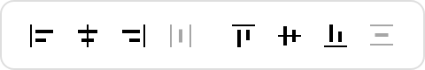
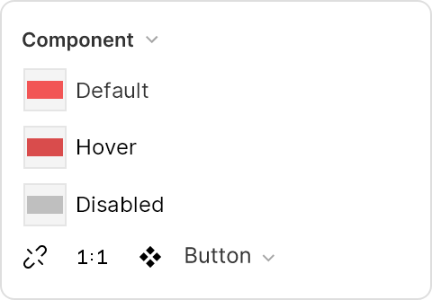
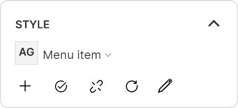
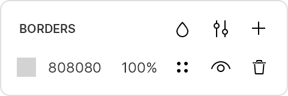
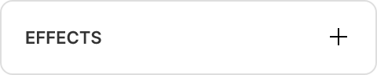
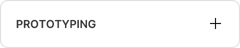
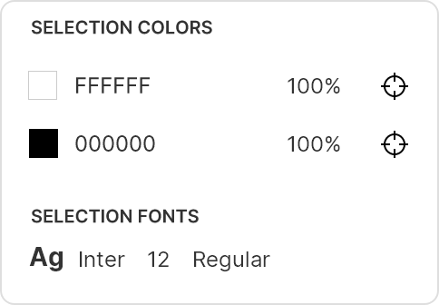

Learn how to work with different types of layers in Lunacy
A layer is any element you see on the canvas.
There are several types of layers in Lunacy:
Follow the links above to learn how to work with specific layers in detail. In this section, we'll go over the basics: how to create, edit, and organize layers on the canvas and the Layer list.
The properties displayed in the right panel when a layer is selected depend on the type of layer. The ones listed below are universal for almost all layer types:
| Right Panel Properties | Description |
|---|---|
|  | Alignment and distribution controls appear when you select two or more layers. |
 |
Layer size and position. Change the size of your layers and their position on the canvas. Use the buttons next to the position controls to flip your images and toggle the lock button on and off to preserve aspect ratio when resizing. Controls vary depending on the selected layer. |
 |
Rotation and corner radius. Rotate your layers and change their corner radius properties. |
|  | Component options. Use this section to manage components. Create new component states, switch between them, and detach instances from main components. |
|  | The Style section Displays the styles applied to your layer (text styles, color styles, effect styles, etc.) You can add styles from UI kits, create your own, and detach layers from applied styles. |
 |
Opacity and blend mode settings. Set the overall opacity of a layer and its blending mode. |
 |
Fills. Change the color of your layer. |
|  | Borders. Add borders to your layers. |
|  | Effects. Add effects (shadows, blurs) to your layers. |
|  | Prototyping. Activate prototyping options and turn your static designs into interactive prototypes. Here's how it works. |
|  | Selection properties. Shows the colors and fonts used in selected layers. |
Lock layers to protect them from accidental edits using the Ctrl + Shift + L / ⌘ + Shift + L shortcuts.
To hide a layer from the canvas, press Ctrl + Shift + H / ⌘ + Shift + H.
Frames are special types of layers that work like containers for your designs.
Using frames is optional, but they come in handy when you're designing for a specific screen size or device, and they are a must for prototyping.
This is how frames appear in the Layer list:
To create a frame:
A or select the Frame tool on the toolbar.You can place layers inside frames by:
Ctrl + Alt + G / ⌘ + ⌥ + G.To remove a frame, use the ungroup shortcut: Ctrl + Shift + G / ⌘ + Shift + G.
Frame properties
| Properties | Description |
|---|---|
| Frame preset, size, and position. The same options as for layers. You can also change your frame size preset. | |
| Clip content. Select this checkbox to hide content outside of the frame boundaries. | |
| Auto layout. A set of parameters for configuring auto layouts. | |
| Background color and content behavior. Change the frame background and choose whether its content changes as you resize it. | |
| Layout grid. Add a layout grid to the frame. | |
| Grid.Add a square grid to the frame. |
This section covers basic operations with layers, including selecting, grouping, duplicating, arranging, moving, and resizing layers.
You can select layers in the Layer list or directly on the canvas.
To select a layer on the canvas, click on it when the Select tool (V) is active. Hold Shift to select several layers. You can also drag to create a selection around one or several layers.
Clicking on a group of layers selects the entire group. To select individual layers inside it, hold down Ctrl / ⌘ as you click, or first click to select the group, then double click to select the layer. Read more about groups below.
To select all layers on the canvas (except for locked layers), press Ctrl + A / ⌘ + A.
To select a layer in the Layer list, find it in the list and click on it.
Hold down Shift or Ctrl / ⌘ to select multiple layers.
You can combine multiple layers together in a group. You can then modify the group and resize it along with the elements it contains.
Frames are more versatile, but groups are also a great way to organize the Layer list, which can include hundreds of items or more in some projects. You can nest groups in other groups or inside frames in whatever way is most convenient to you.
To create a group, select two or more layers and press Ctrl + G / ⌘ + G or click the Group button (□) on the context toolbar at the top of the canvas.
To select a layer inside a group:
Ctrl key and click the required layer.OR
After you select a layer within a group, you can switch to other layers of that group simply by clicking them.
If needed, you can also enable the Select group's content on click option in the right panel, so a click over a group automatically selects the layers inside it.
Alternatively, you can select layers inside groups through the Layer list, which may be more convenient in some cases (for example, when handling fully overlapping layers).
You can move layers into or out of a group by dragging them in the Layer list.
To ungroup layers, select the group and press Ctrl + Shift + G / ⌘ + Shift + G or
click the Ungroup (
Ctrl + D / ⌘ + D.OR
Alt, select the layer, and drag to where you want to place the copy.You can also use the standard Ctrl / ⌘ + C / V shortcuts, but in this case, the layer copies will appear right on top of the original.
Another convenient way to duplicate elements is to use the Repeat grid feature.
You select two or more layers, drag the
Combining Repeat grid with the Avatar tool and generated texts can save you a lot of time when designing UIs with placeholder elements.
You can quickly copy and paste styling properties (fills, borders, effects) between layers.
To copy the properties of a layer:
Ctrl + Alt + C / ⌘ + ⌥ + C.Ctrl + Alt + V / ⌘ + ⌥ + V.| Menu Option | Shortcut | Description |
|---|---|---|
| Copy | Ctrl + C / ⌘ + C |
Copies the selected layer. |
| Cut | Ctrl + X / ⌘ + X |
Cuts the selected layer and copies it to the clipboard. |
| Paste | Ctrl + V / ⌘ + V |
Pastes the content of the clipboard onto the canvas. |
| Paste here | - | Pastes the content of the clipboard onto the canvas, depending on where the cursor is. |
| Paste over | - | Pastes the content of the clipboard over the selected layer. |
| Copy as Text | - | Only available for text layers. Copies only the text content of the layer, excluding its properties. |
| Copy as CSS/SVG/XAML/PNG | - | These options allow you to copy the code of the selected layer in the required format. |
| Copy style/Paste style | Ctrl + Alt + C / ⌘ + ⌥ + C |
These options allow you to copy the style of the selected layer and apply them to another layer. |
| Export as PNG to cloud, Copy URL | Alt + C / ⌥ + C |
Exports the selection to the Icons8 cloud and copies the link to your clipboard. You can share the link to your design with other people. |
Lunacy automatically determines the order of layers (the Z-index) on the canvas depending on their size. For example, if you drag a smaller layer (that's at the bottom of the layer list) over a larger one, Lunacy places the small layer on top.
You can adjust layer order manually in the Layer list and also use shortcuts or context menu commands:
| Command | Description | Windows/Linux Shortcut | MacOS Shortcut |
|---|---|---|---|
| Bring forward | Moves the selected layer one step forward. | Ctrl + ] |
⌘ + ] |
| Bring to front | Places the selected layer at the top of the stack, above all other elements. | Ctrl + Shift + ] |
⌘ + Shift + ] |
| Send backward | Moves the selected layer one step backward. | Ctrl + [ |
⌘ + [ |
| Send to back | Places the selected layer to the bottom of the stack. | Ctrl + Shift + [ |
⌘ + Shift + [ |
To quickly align and distribute layers on the canvas, use the Align and Distribute spacing controls in the top row of the right panel.
They become active when you select two or more layers on the canvas or when you select a single layer on a frame (in this case, Lunacy will align the layer relative to the borders of the frame).
| Icon | Description | Windows/Linux Shortcut | MacOS Shortcut |
|---|---|---|---|
| Align left | Aligns the selected layers to the left of the selection. | Ctrl + Shift + ← |
⌘ + Shift + ← |
| Align horizontally | Horizontally centers the selected layers. | Ctrl + Shift + - |
⌘ + Shift + - |
| Align right | Aligns the selected layers to the right of the selection. | Ctrl + Shift + → |
⌘ + Shift + → |
| Distribute vertical spacing | Distributes vertical spacing evenly between the selected layers. | Ctrl + Shift + V |
⌘ + Shift + V |
| Align top | Aligns the selected layers to the top of the selection. | Ctrl + Shift + ↑ |
⌘ + Shift + ↑ |
| Align vertically | Vertically centers the selected layers. | Ctrl + Shift + | |
⌘ + Shift + | |
| Align bottom | Aligns the selected layers to the bottom of the selection. | Ctrl + Shift + ↓ |
⌘ + Shift + ↓ |
| Distribute horizontal spacing | Distributes horizontal spacing evenly between the selected layers. | Ctrl + Shift + H |
⌘ + Shift + H |
You can create hyperlinks from one layer to another in your document, even if the layers are on different pages. his can be useful, for example, for simplifying navigation in large documents.
To do this:
Ctrl + L / ⌘ + L (or select Copy/Paste as → Copy link on the context menu).
F2 to rename the layer, paste the target layer link from your clipboard, and press Enter.
Ctrl / ⌘ and click the layer you renamed, and you'll be redirected to the target layer.
To move a layer, just click and drag it
If you want to restrict layer movement to the X or Y axis, hold down Shift while you're moving the layer.
Use the Scale tool to resize a layer while preserving the aspect ratio and adjusting the size of any borders/effects applied to the layer.